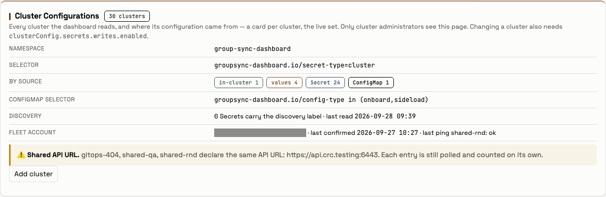
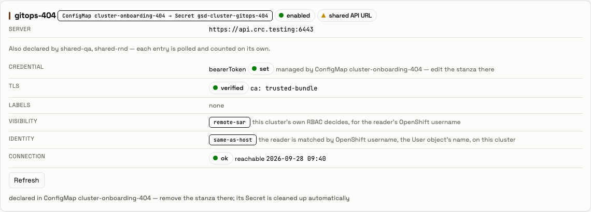
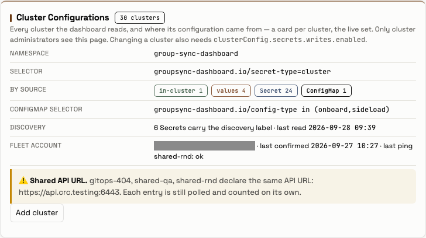
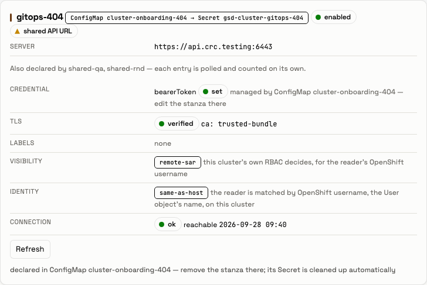
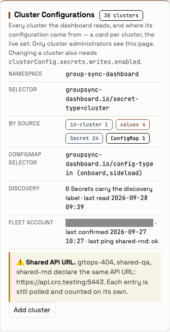
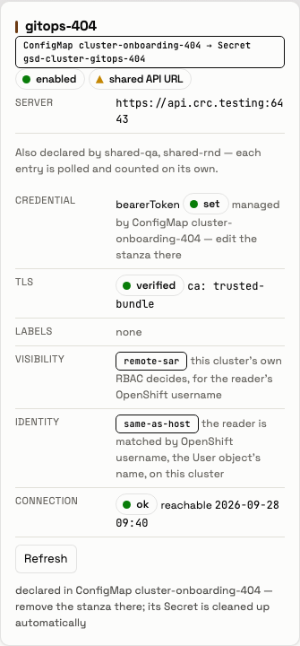

Outcome. The lab served application 1.11.0 at main f59e0ee782 (evidence/before-version.txt,
evidence/after-version.txt). The committed onboarding example, applied with three values changed, made the
dashboard do what GitOps onboarding is built to do. Discovery read the stanza. The dashboard logged in once as
the fleet account, read the remote poller token and revoked its session. It wrote gsd-cluster-gitops-404, polled
the cluster, and pruned the Secret when the map was deleted. The Cluster Configurations tab counted the cluster under
ConfigMap and drew its chip ConfigMap cluster-onboarding-404 → Secret gsd-cluster-gitops-404, which is #404's
point. Every Definition-of-Done row below passes.
The walk was run by OB1-lite as developer with a temporary, labelled update clusterrolebindings grant. The walker
captured every file under evidence/ and screenshots/ and cleaned the lab up. Its session then ended on an API
usage limit before it wrote this README. The orchestrator wrote this README from those files and checked the lab's
end state again at 10:03:00Z: no grant (can-i no), no onboarding ConfigMap, no gsd-cluster-gitops-404, the
fleet Lease with no holder, shared-qa at 2981054, and the same PVC UIDs.
The operator's ruling this walk follows (2026-09-28): "This is our goal and part of my design. There is nothing risky about this. This is the intention." A ConfigMap-declared cluster makes the dashboard log in with the fleet account's correct password; the walk exercises that and measures its budget. No person or script logged in as the fleet account, and no wrong password was placed.
| Row | Verdict | Evidence |
|---|---|---|
| The header counts the GitOps cluster under ConfigMap | PASS | At 1280, 768 and 375 px: by source in-cluster 1 values 4 Secret 24 ConfigMap 1 (evidence/walk-output.txt; 01, 03, 05-*-header.png). |
Its chip reads ConfigMap <name> → Secret <name> |
PASS | The only ConfigMap-sourced card is gitops-404, chip ConfigMap cluster-onboarding-404 → Secret gsd-cluster-gitops-404 at every width (evidence/walk-output.txt; 02, 04, 06-*-card-gitops-404.png). |
| The generated row is managed by its ConfigMap | PASS | No Rotate and no Delete on it: {"rotate": 0, "delete": 0, "buttons": ["Refresh"]}. The card says managed by ConfigMap cluster-onboarding-404 — edit the stanza there and declared in ConfigMap cluster-onboarding-404 — remove the stanza there; its Secret is cleaned up automatically (02-1280-card-gitops-404.png). |
| The discovery line (#467) | NOTED | The line read 6 Secrets carry the discovery label, while discovery logged seen=7 accepted=6 refused=1. The count is the served Secret-backed clusters, not the labelled Secrets. That is #467's wording defect, seen again here. |
| The product's lookup, and the fleet account's budget | PASS | One fleet-login cluster=gitops-404 at 09:39:59Z, then fleet-logout … outcome=revoked (evidence/created-podlog.txt). The OAuth audit log: the fleet account had 10 authorizes before and 11 after, with exactly 1 in the walk's window (09:39:59Z challenging-client authorize allow 302) (evidence/before-audit.txt, evidence/window-audit.txt, evidence/after-audit.txt). Its challenging-client tokens: 2 before and 2 after, because the session was revoked (evidence/before-tokens.txt, evidence/after-tokens.txt). |
| The fleet Lease is claimed and released | PASS | evidence/lease-watch.txt: at 09:39:59Z the pod group-sync-dashboard-644f6884db-hdbr7 held it (resourceVersions 5895069 → 5895072), then released it (5895075, holderIdentity empty). The end state was empty (evidence/final-lease.txt). |
| The generated Secret, then its prune | PASS | The map was created at 09:35:57Z (evidence/cm-create.txt). gsd-cluster-gitops-404 was created at 09:39:59Z, 247 s later, within one discovery interval (evidence/created-wait.txt). Its annotations are managed-by: configmap-onboarding, source-configmap: cluster-onboarding-404, token-source: remote-lookup, and data keys only config, enabled, identity, name, server, visibility (evidence/created-secret.txt). Discovery logged added=gitops-404 … credential=remote-lookup, then changed=gitops-404 … credential=bearer, then polling started, and 61 users recorded. The map was deleted at 09:41:04Z; the Secret was gone 238 s later (evidence/cm-delete.txt, evidence/pruned-wait.txt, evidence/after-secret.txt). |
| Nothing else changed | PASS | can-i update clusterrolebindings --as=developer: no → yes → no (evidence/before-cani.txt, granted-cani.txt, after-cani.txt). The grant was deleted by its label, and No resources found after (evidence/grant-delete.txt, evidence/after-grant.txt). No onboarding ConfigMap was left (evidence/after-onboarding.txt). shared-qa was at resourceVersion 2981054 before and at the end (evidence/before-sharedqa.txt, evidence/final-sharedqa.txt). The PVC UIDs, f065b7a4-535c-4ef1-868c-58f5afee4953 and 08c7d45c-a3eb-47be-8506-f24ea7a3e0e3, were unchanged (evidence/before-pvcs.txt, evidence/final-pvcs.txt). |
| No page error, no sideways scroll | PASS | no uncaught page errors: [] and no Dashboard API error at each width; scrollWidth, innerWidth [1280, 1280], [768, 768], [375, 375] (evidence/walk-output.txt). |
The retired gitops-404 row stays in the dashboard's database as history, as the onboarding cleanup rule states
(evidence/after-clusterrows.txt lists the store's cluster rows).
scripts/cm.yaml is examples/cluster-onboarding/configmap.yaml with three values changed, as the #389 walk did
(reports/2026-09-26_gitops-examples-389/README.md):
cluster-onboarding-404;gitops-404;apiUrl, to https://api.crc.testing:6443.It also carries the label walk.gsd.lab/run=gitops-404-2026-09-28, by which it was deleted.
| Instant | What | Evidence |
|---|---|---|
| from 09:35:04 | Before: version, PVCs, can-i no, the Lease (5127386, no holder), shared-qa, no onboarding map, the fleet account's audit count (10) and tokens (2) |
evidence/before-*.txt |
| 09:35:57 | oc create -f scripts/cm.yaml |
evidence/cm-create.txt |
| 09:39:59 | Discovery cycle 50 added=gitops-404; the lookup: Lease claimed, one fleet login, session revoked, Secret written, Lease released; cycle 51 changed=gitops-404, polling started |
evidence/created-podlog.txt, evidence/lease-watch.txt |
| 09:40:12 | The generated Secret read | evidence/created-secret.txt |
| 09:40:43 → 09:40:54 | The walk at 1280, 768 and 375 px, as developer with the grant |
evidence/walk-output.txt, screenshots/ |
| 09:41:04 | The map deleted by its label | evidence/cm-delete.txt |
| 09:45:02 | The generated Secret gone (238 s) | evidence/pruned-wait.txt |
| after | The grant removed; end state; the audit window (1 fleet authorize) | evidence/after-*.txt, evidence/final-*.txt, evidence/window-audit.txt |
| 10:03:00 | The orchestrator's independent re-check of the end state | this README |
scripts/capture.sh replaces the fleet account's name with <fleet account> and any sha256~ token with
sha256~<redacted> in every file it writes. The header screenshots cover the fleet account row's value with a grey
box. developer's CRC password reaches Playwright only through the environment.
From the repository root, with KUBECONFIG set to a CRC admin kubeconfig. Writes must be enabled
(clusterSecretsWritesEnabled: true in the release's ConfigMap).
F=reports/2026-09-28_gitops-404-walk
oc create -f "$F/scripts/grant.yaml"
oc create -f "$F/scripts/cm.yaml"
T0=$(date -u +%Y-%m-%dT%H:%M:%SZ) # the instant of the apply
"$F/scripts/wait-secret.sh" present created "$T0" 600 # the lookup: about one discovery interval
GSD_FLEET_ACCOUNT="<the fleet account, used only to cover its name in screenshots>" \
GSD_UI_PASSWORD="$(crc console --credentials -o json | jq -r .clusterConfig.developerCredentials.password)" \
local-development/.venv/bin/python "$F/scripts/walk.py"
T1=$(date -u +%Y-%m-%dT%H:%M:%SZ) # the instant of the delete
oc delete configmaps -n group-sync-dashboard -l walk.gsd.lab/run=gitops-404-2026-09-28
"$F/scripts/wait-secret.sh" absent pruned "$T1" 600 # the prune
oc delete clusterroles.rbac.authorization.k8s.io,clusterrolebindings.rbac.authorization.k8s.io \
-l walk.gsd.lab/run=gitops-404-2026-09-28
scripts/capture.sh takes the before, after and final captures, and scripts/lease-watch.sh records the Lease's
changes during the lookup.





